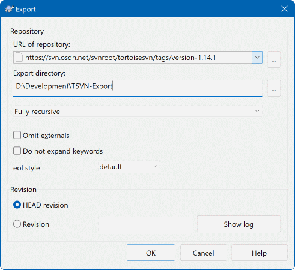
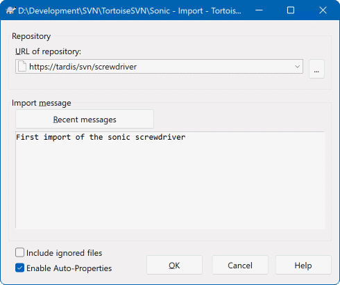

22补丁与导出：不走仓库传代码
绝大多数时候，代码的流转都是「提交 → 更新」这一条路。但总有些场合不适合走仓库： 你还没有账号、只想给同事看一处改动、要给客户发一份干净的代码、要把一批现成的文件一次性放上服务器。 这一节讲四个不依赖提交流程的传代码方式：补丁、应用补丁、导出、导入。
补丁（Patch）——把你的改动变成一个很小很轻的文本文件发给别人。对方能看到你改了哪几行、再决定要不要采纳。适合「我还没有提交权限」或者「这个改动先给别人过一眼」。
导出（Export）——从仓库里拷出一份干净的代码，不带任何 SVN 痕迹。适合交给客户、打包发布、部署上线。
导入（Import）——把一个现成的目录一次性放上仓库，不需要先检出。适合把老项目、外包交付的文件搬进版本库。
检出（Checkout）——本篇前面都在讲的那个，带版本控制能力的完整工作副本。放在这里一起对比，是因为它和 Export 长得像、用途完全不同。
创建补丁：把改动变成一个文件
补丁文件本质上是一段记录了差异的纯文本：「第几行原来是这个、改成了那个」。它只有几 KB，用邮件、聊天工具、工单系统都能发，对方拿到后一键应用。
OK 后选择保存位置和文件名。对话框里能直接选择保存成 .patch 或 .diff 格式，内容基本一样，挑一个就行。把它和你的说明一起发出去。
① 还没有提交权限。新人、外包、临时支援的同学，改完做成补丁发给负责人，由有权限的人应用后再提交——比开账号更轻，也更安全。
② 改动需要先被评审。先做成补丁发给同事，他看清楚每一行再决定要不要收，相当于一次小型代码评审。
③ 环境对不上时的应急交付。对方那边的版本和你这边不完全一致，发整个文件夹不现实，一个只含差异的小补丁是最合适的载体。
应用补丁：把别人发来的改动合进来
Message 里写清「应用自某某人的补丁」。
Resolved。
导出：拿一份干净的代码出来
导出和检出长得非常像——都是从一个地址把代码拉到本地一个文件夹。区别就一个，但这个区别决定了它们的用途：导出出来的副本里没有 .svn 目录，也不受版本控制。
Repo-browser 里浏览仓库时，对某个目录或文件同样能找到这个命令。
URL of repository 里填仓库地址（可以精确到某个子目录，比如只导出 /trunk），在下面的 Export directory 里选本地目标文件夹。
.svn 隐藏目录，文件图标上也没有绿色对勾之类的角标，这就是一份干净的代码。打包压缩发给客户即可。

② Export directory · 导出到哪——本地目标文件夹。如果目标文件夹已经存在并且里面有东西，工具会提示覆盖，操作前先确认里面没有你要留的文件。
③ Export revision · 导出哪个版本——这是这个对话框里最容易被忽略、也最有价值的一项。默认是最新版本；下拉里可以选具体版本号或按日期。给客户的每一份交付，都建议在这里锁定成一个明确的版本号，这样将来出问题，你能一口气说清「发给客户的到底是哪一版」。
④ Revision 旁的 Show log 按钮——点它可以先打开日志看一遍，确认哪个版本才是你要的那一版，再回来填版本号。先看日志再选版本，比凭记忆填数字靠谱。
⑤ Export unversioned files too——如果导出源里混着一些尚未纳入版本控制的文件（
灰色问号的那些），勾上这个能一并导出。一般不勾，因为没纳入版本控制的东西本来就不该出现在交付物里。⑥ Omit externals——外部引用是指「从别的仓库目录挂过来的内容」。勾上它就不去拉这部分。大多数项目没有用到外部引用，这一项保持默认即可。
| 常见用途 | 为什么用 Export 而不是直接复制 | 怎么做 |
|---|---|---|
| 给客户发代码 | 工作副本里混着你的本地改动、调试文件、.svn 目录，直接打包发出去既不专业也可能漏了不该给的东西。 | 从仓库导出指定版本的 /trunk，压缩后发送。 |
| 打包发布 | 发布要用服务器上确定的某一版，不能用手上正在改的本地副本，否则出的包和别人看到的代码对不上。 | 导出发版那一版，再走你们的打包流程。 |
| 部署到服务器 | 部署机器上不需要做版本控制，多出来的 .svn 目录只是累赘，还会暴露仓库地址信息。 | 导出到部署目录，直接替换旧内容。 |
| 做备份留底 | 想要一份「某个时间点长什么样」的快照，看得见摸得着。 | 按日期导出，文件夹名带上日期，归档保存。 |
导入：把现成的目录一次放进仓库
手上有一堆早就写好的文件，没有任何版本历史，想一次性搬上服务器。这时不需要先检出——直接导入就行。
.svn 残留目录。导进去容易，导错了要一个一个删。
.../MyProject/trunk 这一层；填成仓库根的话，你文件夹里的东西会直接堆到 trunk 旁边，结构就乱了。
Repo-browser 看一眼，确认你要填的位置是干净的。位置已经用了，就先删除或换一个路径。
Message 里写清这是什么——比如「导入项目初始版本（来自旧共享盘）」。导入会产生一次提交，这句话就是整份初始历史的第一条记录，值得写明白。

Repo-browser 把目标路径看一遍。② Import Message · 说明文字——这次导入的提交信息。写得具体一点，将来别人查历史时能看懂这批东西的来历。
③ 上方的 Import directory 提示——它告诉你当前要从哪个本地目录导入内容。确认这个目录选对了：它是你在资源管理器里右键的那一个。
④ Include ignored files——默认情况下，被「忽略属性」排除掉的文件（编译产物、临时文件）不会被导进去，这正是你想要的。只有在你确实想把它们也传上去时才勾选。
⑤ Depth 深度选项——决定导进去多少层。一般保持完整递归（把整个目录树都传），除非你只想导入最外面一层。
⑥ 完成之后的进度窗口——导入会像提交一样显示一个进度列表，每个文件前面有 A（新增）之类的标记。看到全部完成、没有错误行，才算真的传上去了。
新手最容易卡在这里：导入成功了，于是在原来那个文件夹里继续改代码，结果怎么改都提交不了——因为那个文件夹从头到尾都不是工作副本，SVN 只是借用它把文件读了一遍传上去而已。
正确的做法二选一：① 在旁边建个新文件夹，对着仓库地址做一次检出，以后就在那个检出目录里干活（目录名可以带个后缀区分，比如 MyProject-wc）；② 就地检出——在那个文件夹上直接对同一地址做检出，把服务器上的内容拉下来覆盖对齐，之后它才变成真正的工作副本。
Checkout / Export / Import 到底差在哪
「导出和检出不是一样吗？都是把代码拉到本地。」——不一样。导出的副本不受版本控制：没有角标、没有右键菜单、改完也不能提交。它只是一个快照。
「导出比检出快，那平时都用导出好了。」——导出出来的东西改不了、也更新不了，你在里面写一天代码，最后没有任何办法安全地送回服务器。
「导入就是把文件夹复制到服务器上。」——导入只会传上去，你本地那个文件夹不会因此变成工作副本，它在 SVN 眼里仍然是「外人」。
「补丁那么麻烦，不如直接把整个文件夹发过去。」——发整个文件夹对方没法看出你改了什么，也没法只收一部分，而且容易把本地乱七八糟的东西一起发出去。
Checkout = 领一份带管控权的工作副本。你要长期在这里干活，改、更、提都在里面发生。
Export = 取一份定格的快照。它是一次性的交付物，给出去之后和仓库再无关系。用完就归档，不要在里面开发。
Import = 单向送货上门。只负责把本地的既成内容放上服务器，放完还要另外检出才能继续开发。
Patch = 只发送差异。体积小、可审阅、可挑选，是「没有权限」和「需要评审」两种场景的标准做法。
| 对比项 | Checkout 检出 | Export 导出 | Import 导入 |
|---|---|---|---|
| 方向 | 仓库 → 本地 | 仓库 → 本地 | 本地 → 仓库 |
| 结果带版本控制吗 | 带。有角标、有右键菜单、能提交更新 | 不带。就是个普通文件夹 | 上传后就结束了，本地不会因此被管控 |
| 有 .svn 目录吗 | 每个文件夹里都有 | 没有，完全干净 | 不涉及（是往上传） |
| 能选版本吗 | 能，可检出某一版或某一分支 | 能，而且强烈建议锁定版本 | 不适用（就是当前这份内容） |
| 典型用途 | 日常开发、拉分支、换机器重建环境 | 给客户、打包发布、部署、归档快照 | 老项目入库、外包交付入库、批量初始化 |
| 用完还要做什么 | 直接开始改代码 | 别在里面改，它是交付物，改了就白导 | 另外做一次检出，才能继续开发 |
| 我的目的 | 该用哪个操作 | 备注 |
|---|---|---|
| 我要长期在这个项目上写代码 | Checkout | 在空文件夹上做，得到工作副本。 |
| 我要给客户发一份代码 | Export | 选好版本号，导出的绝对干净。 |
| 我要打一个发布包 | Export | 从发版那一版导出，再走打包流程。 |
| 我要把一批现成的文件传上服务器 | Import | 不用先检出，但导完要另外检出。 |
| 我改了代码，但还没有提交权限 | Create patch | 把补丁发给有权限的人代为提交。 |
| 同事发来一个补丁，我要合进来 | Apply patch | 先 Update，再预览，最后应用。 |
| 我只想看看别人改了什么，不动本地 | Show log / Repo-browser | 纯查看，不产生任何本地变化（第 8 节）。 |
| 我要回到某个历史版本 | Update to revision | 不是导出也不是检出，见第 9 节。 |
要在这里干活 → 检出（Checkout）；要交出去一份 → 导出（Export）；要把现成的搬上库 → 导入（Import）；只想传我改的那几行 → 补丁（Patch）。
记住这四句，日常遇到的场景基本都能对上号。分不清的时候回来把上面的表看一眼就行。